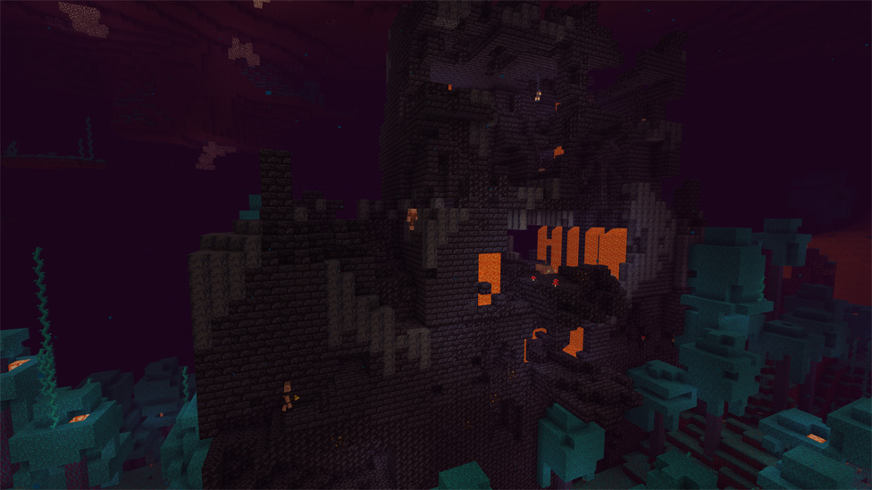
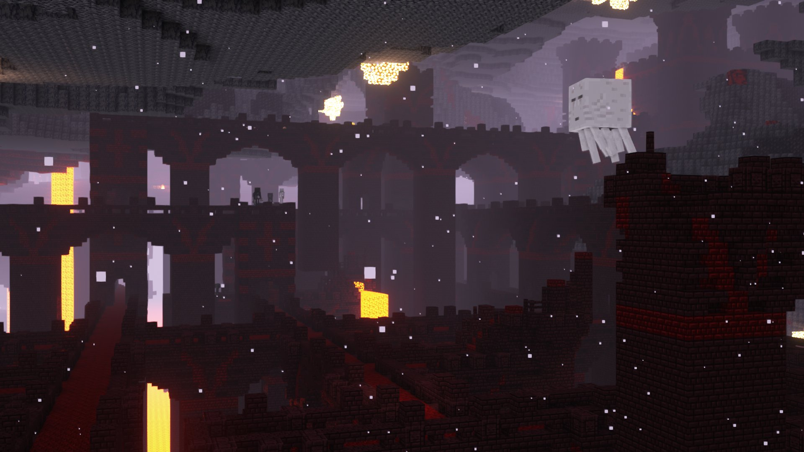
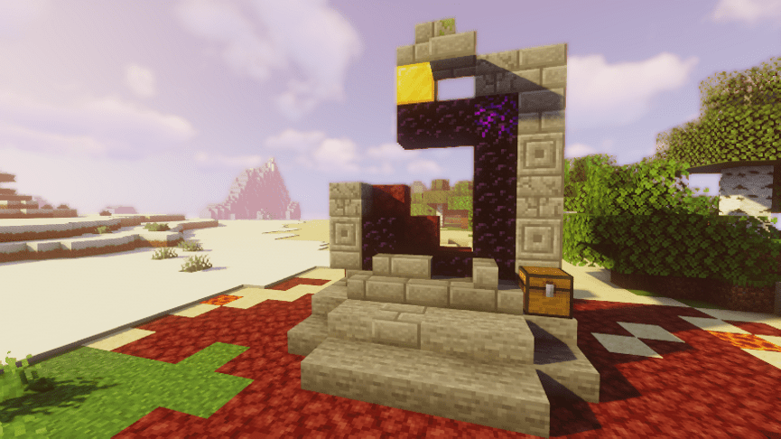

The Nether
The Nether, a hot and fiery dimension in the minecraft world, has many different interesting structures and mobs compared to the overworld.

Bastions
Bastion remnants are large, castle-like generated structures found in the Nether. They house piglings and piglin brutes, simple entities capable of trading like villagers. They obviously have trading experience with someone similar to the player, if they are willing when the player is wearing gold and has some to trade with. Who were these people?
Nether Fortress
No sentient mobs inhabit these catacomb mixed with castle like structures. They do have loot left behind by someone and they have gardens of netherwart. Someone had to have planted these gardens and built the structures, but with no complexly made entities in the nether, we don't know who could have done it.
Ruined Portal
While technically an overworld structure, these ruined portals were obviously used at some point, and we don't know who.
